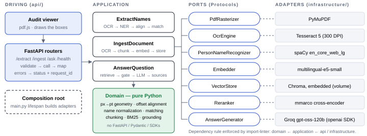
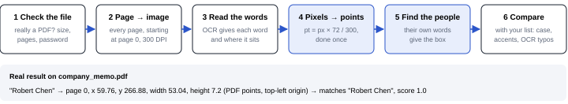
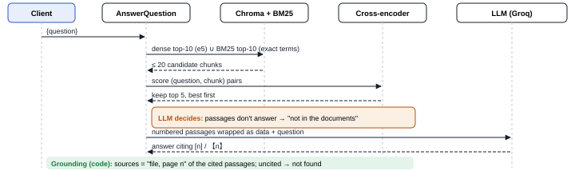
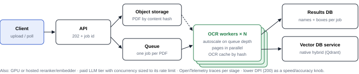

Give it a scanned PDF and it returns every person mentioned, with the page and the exact box where the name sits, so a reviewer can check it. It also compares those names with a list you send, and answers questions about uploaded documents, citing the page each answer comes from.



| Need | Choice | Why | Trade-off |
|---|---|---|---|
| Read scanned text | Tesseract | Free, runs on CPU, gives each word's position | Struggles with poor scans; a cloud OCR could replace it |
| PDF → images | PyMuPDF | Fast, knows page sizes in points | AGPL licence; pypdfium2 if that matters |
| Find people | spaCy (large English model) | Measured best on our samples; the small model mistook a project and a magazine for people | ~400 MB more; weak on ALL-CAPS text |
| Compare names | rapidfuzz | Whole-name similarity, fast | A fixed threshold (0.90): configurable |
| Search by meaning | e5 (multilingual) + Chroma | Spanish and English, no extra servers | One process writes; a database service at scale |
| Rank results | Multilingual cross-encoder | ~1.5 s per question on CPU | A stronger model took 21 s on CPU |
| Write answers | Groq, gpt-oss-120b | Free and fast; any OpenAI-compatible provider by config | Rate limits on the free tier; text leaves the machine |
1000 PDFs an hour is one every 3.6 seconds. Reading a page takes 2–3 seconds of CPU, so with 5 pages per PDF that is about 4 busy cores (8 with headroom). The heavy work moves out of the request: the upload returns a job id right away, and workers that scale with the queue do the reading.

| Failure | What we do | Caller sees |
|---|---|---|
| Not a PDF, empty, too big, too many pages, password | Checked before any work starts | 4xx with a specific code |
| OCR engine missing or stuck | Time limit per page | 503 |
| Poor scan | Words the OCR is unsure of are dropped, so no box is drawn over noise | fewer names |
| LLM slow, busy or down | Time limit and automatic retries; names and indexing keep working | 503 / 502 |
| Answer not in the documents | The LLM says so; an answer that cites nothing counts as "not found" | "not found" |
| A document tries to give the LLM orders | Document text is marked as data; the LLM has no tools | normal answer |
| Same file uploaded twice | Same fingerprint, so it replaces itself | no duplicates |
| Text in ALL CAPS | Known limit of the name finder | documented |
Simple lookups ("Who is the CEO?") go to a small, cheap model; questions that compare, add up or ask "why" across several passages go to the large one. The choice is made by plain rules after the search (how many passages look relevant, words like "compare" or "why"), not by another LLM. If the small model gives an answer without citations while the search found good evidence, the question is retried once on the large model. The rules are tuned on our test questions, for accuracy and cost.
Details: DECISIONS.md (decisions, limitations, use of AI) · run with docker compose up --build, then open http://localhost:8000/viewer